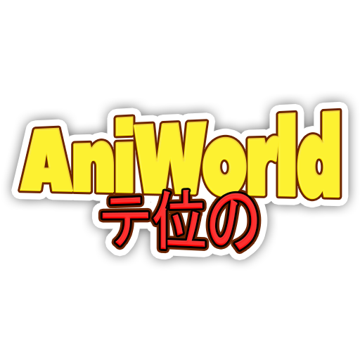

O termo Anime vem do inglês, Animation. É usado pela cultura japonesa para designar toda forma de animação: “Se pegarmos um desenho da Disney, os japoneses também vão chamar de Anime, Disney no Anime, mas no exterior Anime passou a significar toda animação feita no Japão com o estilo e a estética desenvolvida lá, bastante derivada do Mangá”, explica Cristina Sato, Pesquisadora da Abrademi, em entrevista exclusiva à TV Bunkyo.
O universo fascinante do Anime conquistou uma legião de fãs no ocidente, com sua carga dramática, expressões faciais contorcidas, movimentos corporais excêntricos, muito melhor trabalhados do que os desenhos animados ocidentais.
“Sailor Moon”, “Naruto”, “Dragon Ball”… Quem é que não se lembra dos “Cavaleiros do Zodíaco”? Hermes Baroli, o dublador desta série de Anime exibida pela TV Manchete, no início dos anos 90, comenta: “Cavaleiros do Zodíaco teve várias fases, a gente começou a dublá-lo há 27 anos, em 1994, quando o Anime ainda era uma novidade no Brasil, uma linguagem nova”. Aos poucos, esta linguagem do Anime foi ganhando importância no cenário nacional, até tornar-se uma febre não apenas na comunidade nipo-brasileira, como no público em geral.
Confira a reportagem na íntegra. O programa é apresentado Ricardo Sam e Roberta Tiepo, com reportagens de May Fujikake. A realização é da Sociedade Brasileira de Cultura Japonesa e de Assistência Social – Bunkyo, com o apoio da JICA (Agência de Cooperação Internacional do Japão).

Isekai (japonês :異 世界, traduzido como "mundo diferente" ou "outro mundo") é um gênero japonês de light novels, mangás e anime que giram em torno de uma pessoa que é transportada e tem que sobreviver em outro mundo, como um mundo de fantasia ou universo paralelo.
Um dos tipos de animes mais populares, o Shounen, cuja tradução é menino, é direcionado para o público masculino jovem, entre 12 e 18 anos. Em suma, o Shounen costuma ser focado na jornada do herói, que nesse caso é sempre um garoto. Ademais, esse tipo de anime pode ter subgêneros como fantasia, esporte, ficção científica, comédia, terror, etc.
O shoujo também está entre os tipos de animes mais populares. Em suma, shoujo significa menina, e assim como o Shounen, é direcionado para a faixa etária entre 12 e 18 anos. No entanto, seu público-alvo é principalmente para o gênero feminino. Ademais, as histórias costumam apresentar garotas como protagonistas, sendo mais focadas em dramas, romances e outros eventos que marcam o desenvolvimento de uma mulher.
Seinen significa homem adulto, portanto, é direcionado para um público mais maduro, principalmente para o gênero masculino entre 18 e 40 anos. Em suma, esse tipo de anime contém temas mais complexos, com conteúdo erótico e cenas bem violentas. Enfim, o anime Seinen envolve crimes, ação, horror psicológico, opiniões obscuras, ficção científica e até mesmo comédia. Entre os mais populares estão: One Punch Man, Berserk, Ghost in the Shell, Tokyo Ghoul e Akira.